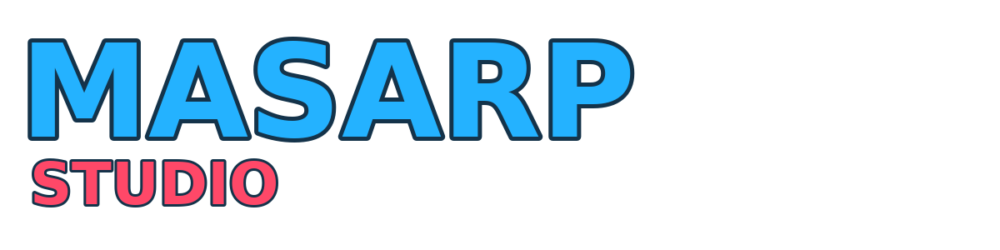

About the studio
MASARP STUDIO
An independent game studio by Samman Lamsal focused on accessible, colorful games for web, mobile and social platforms.

Independent by design
MASARP STUDIO develops original games and prototypes across multiple platforms. The studio’s work includes browser games, Facebook Instant Games, Android releases and projects adapted for third-party game portals.
Facebook Instant GamesProjects include Hunter Strike, Caru and Stick Wars Legend, alongside other social-game releases.
Google PlayMobile projects include MomuBloom and Omelette Chef Kitchen.
Web game developmentCurrent work includes Rival Guys and other browser-first experiments built around accessible controls and short-session gameplay.
DeveloperSamman Lamsal develops and publishes projects under the MASARP STUDIO identity.